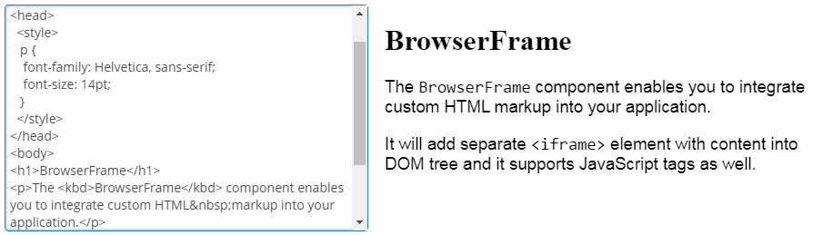
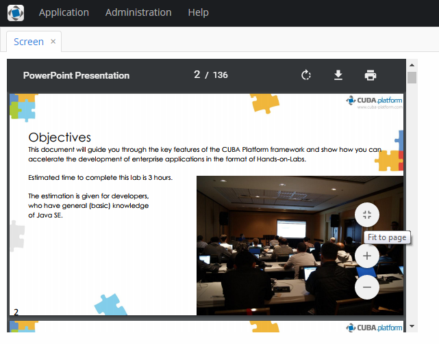

3.5.2.1.2. �览器框�
BrowserFrame 是用æ�¥æ˜¾ç¤ºåµŒå…¥çš„网页，跟 HTML 里é�¢çš„ iframe å…ƒç´ çš„æ•ˆæ�œæ˜¯ä¸€æ ·çš„。
该组件对应的 XML �称: browserFrame
下é�¢æ˜¯ç•Œé�¢ XML æ��è¿°ä¸è¿™ä¸ªç»„件定义的一个例å�：
<browserFrame id="browserFrame"
height="280px"
width="600px"
align="MIDDLE_CENTER">
<url url="https://www.cuba-platform.com/blog/cuba-7-the-new-chapter"/>
</browserFrame>è·Ÿ Image 组件类似, BrowserFrame 组件也å�¯ä»¥æ˜¾ç¤ºä¸�å�Œæ�¥æº�的图片。å�¯ä»¥ç”¨ä¸‹é�¢æ��到的 browserFrame çš„ XML å…ƒç´ æ�¥å£°æ˜�å¼�的设置图片æ�¥æº�çš„ç±»å�‹ï¼š
-
classpath- classpath ä¸èƒ½è®¿é—®çš„资æº�。<browserFrame> <classpath path="com/company/sample/web/screens/myPic.jpg"/> </browserFrame>
-
file- 文件系统的资�。<browserFrame> <file path="D:\sample\modules\web\web\VAADIN\images\myImage.jpg"/> </browserFrame>
-
relativePath- 应用程åº�目录ä¸çš„资æº�。<browserFrame> <relativePath path="VAADIN/images/myImage.jpg"/> </browserFrame>
-
theme- 主题ä¸ç”¨åˆ°çš„资æº�，比如：<browserFrame> <theme path="../halo/com.company.demo/myPic.jpg"/> </browserFrame>
-
url- å�¯ä»�指定 URL åŠ è½½çš„èµ„æº�。<browserFrame> <url url="http://www.foobar2000.org/"/> </browserFrame>
browserFrame 的�性:
-
allow- 指定组件的“功能政ç–â€�。å±�性的值å�¯ä»¥æ˜¯ç©ºæ ¼éš”开的下é�¢å€¼çš„组å�ˆï¼š-
autoplay– æ�§åˆ¶å½“å‰�网页是å�¦å…�许自动æ’放æ�¥å�£çš„请求的媒体。 -
camera– �制当�网页是��许使用视频输入设备。 -
document-domain– �制当�网页是��许设置document.domain。 -
encrypted-media– æ�§åˆ¶å½“å‰�网页是å�¦å…�è®¸ä½¿ç”¨åŠ å¯†åª’ä½“æ‰©å±• API（EME）。 -
fullscreen– �制当�网页是��许使用Element.requestFullScreen()。 -
geolocation– �制当�网页是��许使用地��置��。 -
microphone– �制当�网页是��许使用音频输入设备。 -
midi– �制当�网页是��许使用 Web MIDI API。 -
payment– �制当�网页是��许使用付款请求 API。 -
vr– �制当�网页是��许使用 WebVR API。
-
-
alternateText- 如æ�œ frame ä¸æ²¡æœ‰è®¾ç½®å†…容æº�或者内容æº�ä¸�å�¯ç”¨çš„情况下，作为默认显示的文å—。
browserFrame 内容�的�置信�:
-
referrerpolicy- 设置当è�·å�– frame 的资æº�时，å�‘é€�给哪个 referrer。ReferrerPolicy– 该å±�æ€§çš„æ ‡å‡†å€¼æ�šä¸¾ï¼š-
no-referrer– �会�� referer header。 -
no-referrer-when-downgrade– 如�没有 TLS（HTTPS），则�会�� referer header 给 origins。 -
origin– ��的 referrer �制在 referrer page 的 origin：scheme�host�port。 -
origin-when-cross-origin– ��给其它 origins 的 referrer 会被�制在 scheme�host 和 port。���览也�会包� path。 -
same-origin– ��则会�� referrer，但是跨域的请求�会包� referrer 信�。 -
strict-origin– 在�议的安全级别相�（HTTPS->HTTPS）时，将网页的 orign 作为 referrer ��，但是�会��给�安全级别的目的地（HTTPS->HTTP）。 -
strict-origin-when-cross-origin– 当�起��请求时��全部 URL，在�议的安全级别相�（HTTPS->HTTPS）时，��� origin, 如�是�安全级别的目的地（HTTPS->HTTP），则�会�� header。 -
unsafe-url– referrer 会包å�« origin å’Œ path。该值ä¸�å®‰å…¨ï¼Œå› ä¸ºä»� TLS ä¿�护的资æº�转到了ä¸�安全的 origins，ä»�而泄露了 origins å’Œ paths。
-
-
sandbox- 对 frame 的内容使用更多的é™�制。该å±�性的值如æ�œæ˜¯ç©ºåˆ™ä½¿ç”¨æ‰€æœ‰é™�åˆ¶ï¼Œæˆ–è€…è®¾ç½®ä¸ºç©ºæ ¼åˆ†éš”çš„æ ‡è®°å�‡çº§ç‰¹æ®Šçš„é™�制。Sandbox– 该å±�æ€§çš„æ ‡å‡†å€¼æ�šä¸¾ï¼š-
allow-forms– �许资��交表�。 -
allow-modals– 资��以打开模�窗。 -
allow-orientation-lock– 资��以���幕��。 -
allow-pointer-lock– 资��以使用 Pointer Lock API. -
allow-popups– �许弹窗（比如window.open()�target="_blank"或showModalDialog()）。 -
allow-popups-to-escape-sandbox– �许沙盒内的网页打开新窗�，并且这些新窗��继承当�的沙盒。 -
allow-presentation– �许资�开�一个展示会�。 -
allow-same-origin– �许iframe的内容被当���处�。 -
allow-scripts– �许资��行脚本。 -
allow-storage-access-by-user-activation– å…�许资æº�请求访问父网页的å˜å‚¨èƒ½åŠ›ï¼Œèƒ½ä½¿ç”¨ Storage Access API。 -
allow-top-navigation– �许资��览最顶级网页（以_top命�）�览的内容。 -
allow-top-navigation-by-user-activation– �许资��览最顶级网页�览的内容，但是�有在该网页是通过用户交互产生。 -
allow-downloads-without-user-activation– �许在没有用户交互的情况下进行下载。 -
""– 应用所有的�制。
-
-
srcdoc– å�¯åµŒå…¥çš„行内 HTML，会覆盖srcå±�性。IE å’Œ Edge æµ�览器ä¸�支æŒ�该å±�性。也å�¯ä»¥åœ¨ xml ä¸ä½¿ç”¨srcdocFileå±�性指定 HTML 代ç �的文件。
-
srcdocFile– 文件的路径，文件的内容会被设置到srcdocå±�性。文件内容通过 classPath 资æº�è�·å�–。å�ªèƒ½åœ¨ XML æ��è¿°ä¸è®¾ç½®è¯¥å±�性。
-
bufferSize- 下载资æº�时的缓å˜å¤§å°�，以å—节为å�•ä½�。<browserFrame> <file bufferSize="1024" path="C:/img.png"/> </browserFrame>
-
cacheTime- 缓å˜çš„失效时间，以毫秒为å�•ä½�.<browserFrame> <file cacheTime="2400" path="C:/img.png"/> </browserFrame>
-
mimeType- 资�的 MIME 类�。<browserFrame> <url url="https://avatars3.githubusercontent.com/u/17548514?v=4&s=200" mimeType="image/png"/> </browserFrame>
BrowserFrame 定义的��方法:
-
addSourceChangeListener()- æ·»åŠ ä¸€ä¸ªç›‘å�¬å™¨ï¼Œå½“ frame 的内容æº�å�‘生å�˜åŒ–时触å�‘。@Inject private Notifications notifications; @Inject BrowserFrame browserFrame; @Subscribe protected void onInit(InitEvent event) { browserFrame.addSourceChangeListener(sourceChangeEvent -> notifications.create() .withCaption("Content updated") .show()); }
-
setSource()- 设置 frame 的内容æº�。这个方法æ�¥å�—一个æ��述资æº�ç±»å�‹çš„å�‚数，然å��è¿”å›�相应的资æº�对象，以便å�¯ä»¥ç»§ç»ä½¿ç”¨æµ�å¼�æ“�作对资æº�进行更多的设置。æ¯�ç§�资æº�ç±»å�‹æœ‰å…¶ç‹¬ç‰¹çš„设置方法，比如，ThemeResource具有的setPath()方法ã€�StreamResource具有setStreamSupplier()方法ç‰ï¼šBrowserFrame frame = uiComponents.create(BrowserFrame.NAME); try { frame.setSource(UrlResource.class).setUrl(new URL("http://www.foobar2000.org/")); } catch (MalformedURLException e) { throw new RuntimeException(e); }也å�¯ä»¥ä½¿ç”¨ç”¨äº�
Image组件的资�类�。
-
createResource()- 用资æº�ç±»å�‹è‡ªå·±å®�ç�°çš„方法创建资æº�对象，然å��这个对象å�¯ä»¥ä¼ 递给setSource()方法使用。UrlResource resource = browserFrame.createResource(UrlResource.class) .setUrl(new URL(fromString)); browserFrame.setSource(resource);
- 在 BrowserFrame ä¸ä½¿ç”¨ HTML æ ‡è®°:
-
BrowserFrameå�¯ä»¥é›†æˆ� HTML æ ‡è®°åˆ°åº”ç”¨ç¨‹åº�ä¸ã€‚比如，å�¯ä»¥åœ¨è¿�è¡Œæ—¶æ ¹æ�®ç”¨æˆ·çš„输入生æˆ� HTML 内容。<textArea id="textArea" height="250px" width="400px"/> <browserFrame id="browserFrame" height="250px" width="500px"/>textArea.addTextChangeListener(event -> { byte[] bytes = event.getText().getBytes(StandardCharsets.UTF_8); browserFrame.setSource(StreamResource.class) .setStreamSupplier(() -> new ByteArrayInputStream(bytes)) .setMimeType("text/html"); });
- 用 BrowserFrame 预览 PDF:
-
除了 HTML，
BrowserFrame还å�¯ä»¥ç”¨æ�¥å±•ç¤º PDF 文件的内容。需è¦�é…�置使用文件类å�‹çš„资æº�和相应的 MIME ç±»å�‹ï¼š@Inject private BrowserFrame browserFrame; @Inject private Resources resources; @Subscribe protected void onInit(InitEvent event) { browserFramePdf.setSource(StreamResource.class) .setStreamSupplier(() -> resources.getResourceAsStream("/com/company/demo/" + "web/screens/CUBA_Hands_on_Lab_6.8.pdf")) .setMimeType("application/pdf"); }
- BrowserFrame 的�性
-
align - allow - alternateText - caption - captionAsHtml - contextHelpText - contextHelpTextHtmlEnabled - colspan - css - description - descriptionAsHtml - enable - box.expandRatio - height - icon - id - referrerpolicy - responsive - rowspan - sandbox - srcdoc - srcdocFile - stylename - visible - width
- BrowserFrame 资�的�性
- browserFrame çš„ XML å…ƒç´
-
classpath - file - relativePath - theme - url
- API